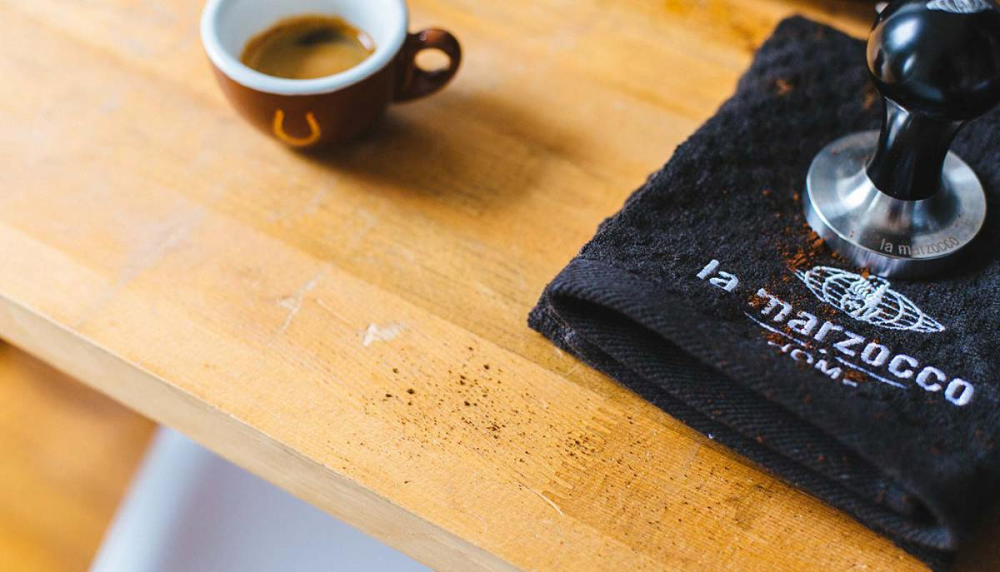

- SCIENCE
- SPOTLIGHT
- TRAVEL
Can coffee make you super human?
Roasting coffee transforms the chemical and physical properties of green coffee beans into roasted coffee products. The roasting process is what produces the characteristic flavor of coffee by causing the green coffee beans to change in taste. Unroasted beans contain similar if not higher levels of acids, protein, sugars, and caffeine as those that have been roasted, but lack the taste of roasted coffee beans due to the Maillard and other chemical reactions that occur during roasting.
The majority of coffee is roasted on a large scale, but small-scale roasting has grown with the trend toward specialty shops
hidden
Process
The vast majority of coffee is roasted commercially on a large scale, but small-scale commercial roasting has grown significantly with the trend toward “single-origin” coffees served at specialty shops. Some coffee drinkers even roast coffee at home as a hobby in order to both experiment with the flavor profile of the beans and ensure themselves of the freshest possible roast.
The coffee-roasting process follows coffee processing and precedes coffee brewing. It consists essentially of sorting, roasting, cooling, and packaging but can also include grinding in larger-scale roasting houses. In larger operations, bags of green coffee beans are hand- or machine-opened, dumped into a hopper, and screened to remove debris. The green beans are then weighed and transferred by belt or pneumatic conveyor to storage hoppers. From the storage hoppers, the green beans are conveyed to the roaster. Initially, the process is endothermic (absorbing heat), but at around 175 °C (347 °F) it becomes exothermic (giving off heat). For the roaster, this means that the beans are heating themselves and an adjustment of the roaster’s heat source might be required. At the end of the roasting cycle, the roasted beans are dumped from the roasting chamber and air cooled with a draft inducer.
Equipment
The most common roasting machines are of two basic types: drum and hot-air, although there are others including packed-bed, tangential and centrifugal roasters. Roasters can operate in either batch or continuous modes. Home roasters are also available.
 La Marzocco is one of the most trusted brands in coffee.Drum machines consist of horizontal rotating drums that tumble the green coffee beans in a heated environment. The heat source can be supplied by natural gas, liquefied petroleum gas (LPG), electricity, or even wood. The most common employ indirectly heated drums where the heat source is under the drum. Direct-fired roasters are roasters in which a flame contacts the beans inside the drum; very few of these machines are still in operation.
The most common roasting machines are of two basic types: drum and hot-air, although there are others including packed-bed, tangential and centrifugal roasters.
Hot-air roasters force heated air through a screen or perforated plate under the coffee beans with sufficient force to lift the beans. Heat is transferred to the beans as they tumble and circulate within this fluidized bed. Some coffee roasters use names for the various degrees of roast, such as City Roast and French Roast, for the internal bean temperatures found during roasting.